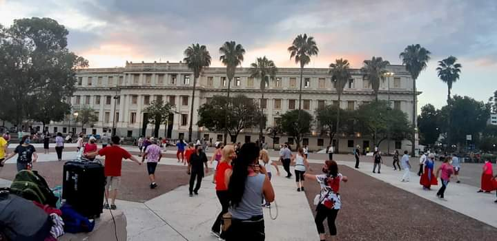

Trascender desde el Arte:la capacidad del arte para superar barreras y limites
Concepto que desafia a trascender, teniendo el poder de transformar, a través de sus encuentros semanales como Bailar la Plaza, potencializando un impacto profundo y duradero en las personas y la sociedad.
 Facebook
Facebook